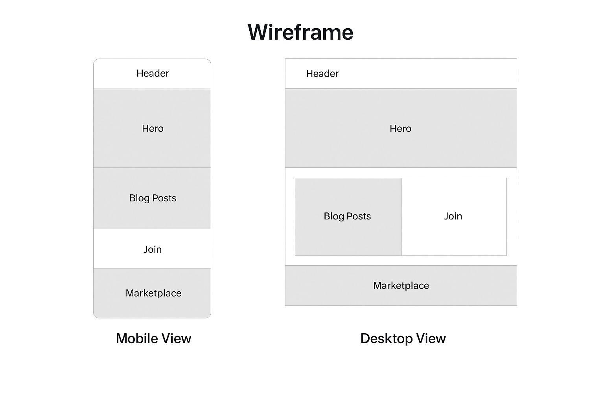

Name: Enchanted Pages Club
This name captures the magical and community-driven spirit of a fantasy book club. It conveys a sense of adventure, storytelling, and shared passion.
Optional domain availability: enchantedpages.club
The site provides a portal for fantasy book lovers. It offers blog entries with themed content, a join page where users can become members, and a marketplace for buying and selling fantasy books among members.
Primary Color (#3e3e7e): Used for headings and accents.
Secondary Color (#f0f4f8): Used for background.
These wireframes outline the layout for both mobile and desktop views of the home page.
